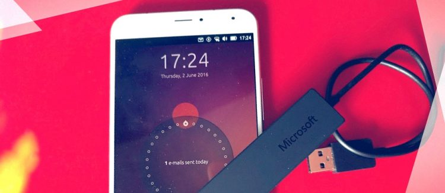

{kind=link}
‘Canonical say all future Ubuntu smartphones will support wireless display’
The hassle of needing wires is the only reservation I have whenever I think about the notion of using a phone as a PC — what most people take “convergence” to mean.
The idea that I can pick up a smartphone (the beating heart of modern computing experiences) and attach it to an external display, hook up a keyboard and mouse, and have a full desktop PC experience in front of me …Well, it appeals to me greatly.
What doesn’t appeal is the notion that I might also need to carry a spaghetti sack of wires with me, one for power, one for display output, maybe a USB hub, don’t forget some speakers or headphones…
It’s a reservation that renders the conceptual computing nirvana of convergence far less mobile in my head; an elegant solution sat amidst a cephalopod-esque cuddle of cables.
Convergence?
Not that any of commercially available Ubuntu Phones support wired display output anyway.
Neither the the Bq E4.5 or E5, nor the Meizu MX4 or new PRO 5 can connect to an external monitor over MHL, HDMI, Slimport, USB-C or any other easily-tangled option.
But with the launch of Ubuntu OTA-11 my big reservation is made moot.
Wireless Display Support on the Meizu PRO 5
Chances are you’re already familiar with the ability to “cast” your phone, tablet or PC screen to a TV wirelessly, be it through something like the Chromecast, Apple AirPlay, Amazon’s TV stick, or a more elaborate set-ups involving remote desktops and mini-PCs.
In OTA-11 Ubuntu enables wireless display support on the Meizu PRO 5 Ubuntu Phone (if you’re a developer you can also enable it on the Bq M10 tablet).
And although it’s still early days for the feature I can tell you that Ubuntu convergence using a wireless display works incredibly well.
{kind=link}
Wireless display settings
In fact, the bulk of my OTA-11 overview was written in the Ubuntu web-browser app running in the PRO 5 which was wirelessly connected to my living room TV (via a Microsoft display adapter dongle) and a bluetooth keyboard. I didn’t even need to hook up a mouse as the phone’s screen became a gesture-sensitive touchpad.
Unlike similar features on Android devices I am not simply seeing a mirror of my phone’s screen stretched to a large TV. The PRO 5 is showing me a desktop UI, with apps and UI features gracefully scaling to take advantage of the increased resolution (albeit capped at 720p).
While there is an ever-so-slight perceptible lag on the screen pointer (we’re talking milliseconds) and some rough edges in the desktop UI/UX itself, the actual wireless display feature kept pace with me magnificently.
It’s crazy to think that this is the first revision. It’s going to get even better from here.
Which Ubuntu Devices Support Wireless Display?
I had the chance to speak to Canonical’s head of product, Richard Collins, about the wireless display capabilities of the PRO 5 last week.
Richard told me that all future Ubuntu smartphones will support wireless display. He noted that the feature Canonical a way to drive forward with its plans for pocket desktop convergence but without being at the mercy of OEMs, many of whom are hesitant to add or license support for wired external displays.
I also asked whether the feature would be ‘back ported’ to support the existing Ubuntu smartphones, like the MX4.
I asked despite knowing the answer, which will not come as a surprise to anyone who reads this site regularly.
The short answer is, at the precise moment, there are “no plans” to add wireless convergence capabilities via aethercast to the first three Ubuntu phones.

But don’t misunderstand; this is not a case of Canonical not wanting to. ‘Chipset limitations’ prevent it from doing so.
Ubuntu’s WiDi implementation leverages onn-chip hardware accelerated encoding to deliver an acceptable frame-rate, keep latency low, and pipe things out over a spec supported by a wide-range of Miracast-supporting dongles, displays and devices.
Part of this code relies on binary bits and pieces found in the newer Android 5.x series kernels. The first three Ubuntu Phones are based off Android 4.x kernels.
And while a version of FlymeOS based on Android 5.0 is available for the MX4, the BSP (board support package) that offers all of the relevant drivers and binary blobs is not open-source/available to Canonical’s engineers.
But all is not lost.
While these limitation stop the older phones from being part of the convergence club right now there’s nothing to say they won’t ever support it. Ubuntu touch is all (mostly) open-source software. The community can dig in, hack, patch and do whatever it needs to help get things running.
For Canonical, with limited engineering resources, it has to invest its time and effort carefully. And, right now, for this specific feature, that’s on the new phones.
“The older phones are still very much supported”, Richard adds, “but they won’t get this feature at present.”
Not a ‘full PC’ quite yet, though
One thing that OTA-11 does not bring to the PRO 5 is a way to run legacy apps. The Bq M10 Ubuntu tablet ships with a selection of these pre-installed, but the new flagship phone gets nothing.
Does this limits the “desktop” experience? A little,. Although some of the mobile apps have ‘desktop’ UIs, many don’t.
Thankfully this minor fly in the awesointment it is temporary. Canonical assure me that a future update will deliver support for installing and running legacy apps on the PRO 5
And I can’t wait.